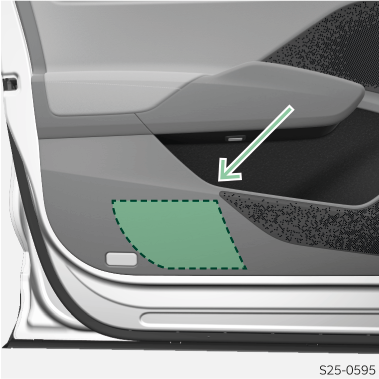

<!-- topicId: 7f003ac5277cfcf41d84703eb1c5b1ee_2_fr_FR | type: topic -->
<h1>Vue d’ensemble</h1>
<html data-dyxml-version="2"><div lang="fr-FR"><div class="topic-content"><section data-type="topic-allgemein" data-dl-contains="block" id="ID_2bad51037b978ffaac14452515ee2f78-2ccc45e3c65a2b9cac144525093e29e7-fr-FR"><p id="ID_6b56db1e7b978ffaac1445255a451a17-2ccc45e3c65a2b9cac144525093e29e7-fr-FR"></p><div data-role="block" data-type="block" id="ID_21778af77b978ffaac1445257cafb97b-2ccc45e3c65a2b9cac144525093e29e7-fr-FR" hasIllu="true"><div data-type="illu" id="ID_fb02c5eee2b82f2e0a5ac13f12cbac16-2ccc45e3c65a2b9cac144525093e29e7-fr-FR"><div data-class="vw-layout-half_column" data-dl-wrapper="figure" id="d2293451e34"><figure id="ID_f5fcd824b65a33c1ac144525185211cd-2ccc45e3c65a2b9cac144525093e29e7-fr-FR" data-role="" data-type="" data-position=""><div><a data-fancybox="group" media-link="" class="fancybox" data-href="../media/img2032b503a0f6b883ac1445251f245978_2_--_--_PNG_3x.png" data-options="{&#34;buttons&#34;:[&#34;fullScreen&#34;, &#34;thumbs&#34;, &#34;close&#34;],&#34;hash&#34;:false}"></img></a></div></figure></div></div></div><div></div></section></div></div></html>